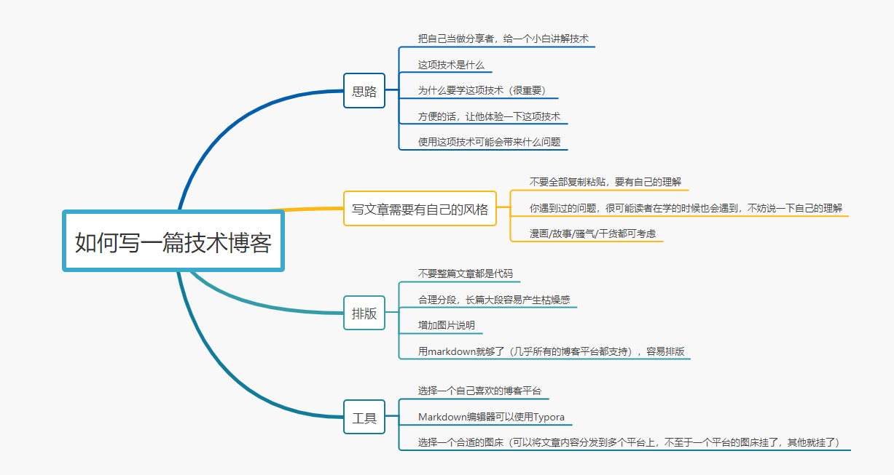
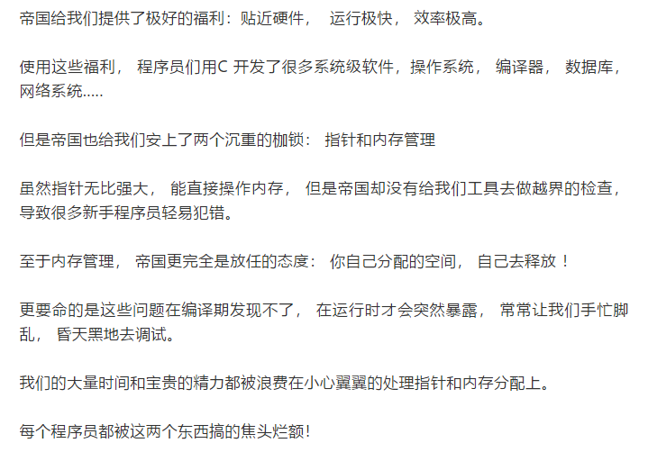
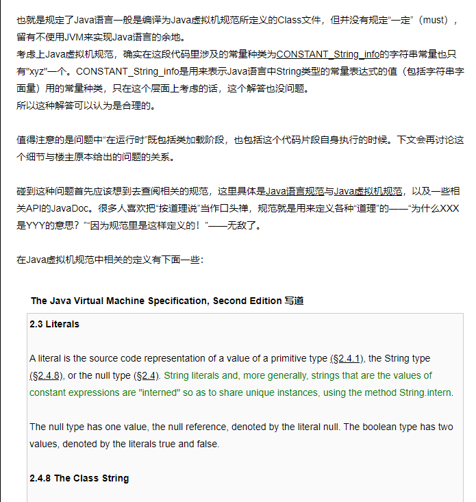

原文连接:https://www.cnblogs.com/Java3y/p/11925949.html
前言
只有光头才能变强。
文本已收录至我的GitHub精选文章，欢迎Star：https://github.com/ZhongFuCheng3y/3y
我一直推崇学技术可以写技术博客去沉淀自己的知识，因为知识点实在是太多太多了，通过自己的博客可以帮助自己快速回顾自己学过的东西。
我最开始的时候也是只记笔记，认为自己能看得懂就好。但如果想验证自己是不是懂了，可以写成技术博客。在写技术博客的过程中肯定会发现：“这个知识点，我好像还有些没搞懂”。
从梳理/编写的过程，自己也会成长不少
有不少的小伙伴曾经问过我：
- “3y你是怎么记笔记的阿？我一边看视频一边记笔记，顾头不顾腚的”
- “你写的博客都是怎么思考的阿？我不会写博客”
下面来谈谈我一些观点（个人/主观），每个人都有自己的方法论，我的观点不适用于所有人。
开局一张图，内容全靠编：

一、如何写一篇技术博客
首先，我认为要把自己当做是一个分享者，而读者是一个小白。然后模拟这个场景：如果你要把你学习到的技术分享给小白，你需要怎么去做。
按照我的思路，我可能会这样做：
- 首先，这项技术是什么你得先告诉他。
- 接着，为什么要学习这项技术，学习了这项技术有什么好处。有没有以前的技术跟这个较为相似的，为什么我不用以前的，而要学新的。（这一步非常非常重要）
- 然后，这项技术的核心用法是什么，给出一些小案例，让小白体验到这项技术。
- 最后，用这项技术可能会出现什么问题，官方有没有提供方案解决，如果没有，可能的解决方案有哪些。
大白话来说，其实就是：
- 是什么
- 为什么
- 怎么做
一般来说，我会把重点放在 为什么 ，因为我一直认为学习一门技术一定得知道：为什么要学。
举个例子，我当初写【消息队列】的思路：
- 回顾一下什么是队列，Java已经支持各种类型的队列了，跟消息队列有什么不同。
- 为什么要用消息队列，不用行不行？用消息队列的好处有哪些
- 用了消息队列可能会带来的问题
如果遇到逻辑可能较为复杂，或者认为读者会看不太懂的时候，可以画图来描述一下，这样整一篇文章看下来就不会太枯燥。
其实吧，我写文章都是按自己学习时的思路来写。如果我在学习时中途某个地方卡住了，我就认为可能读者在学习的时候也会存在同样的问题。所以，我就把我的理解给记录下来，如果有必要就画图来讲解。
我写了两百多篇Java技术博客，有需要的同学可以关注我的GitHub，欢迎一起学习和交流：https://github.com/ZhongFuCheng3y/3y
二、文章需要有自己的风格
每个人写出来的博客都有自己的风格。
比如说有漫画型的：
比如说有故事型的：

比如说有骚气型的：
比如说有纯干货型的：

说了这么多，其实我想说的是：写博客应该要带有属于自己的风格。而不是把网上的资料直接复制粘贴就完事了，这样没有感情，没有灵魂。(当然了，如果网上可能的确有写得很好的，可以这么做，但不可能整一篇都是相同的嘛)
三、关于排版
一篇好的技术文章，它的排版一般不会差。我认为写技术文章有几点可以提高一下阅读体验：
- 整篇文章不要90%都是代码，适当减少代码，贴关键的部分就好了。(完整的代码可以上传到GitHub)
- 多分段，技术文章可能就相对枯燥，如果将技术的说明挤在一块，可能阅读起来没那么好的体验
- 增加图示说明 or 插入相关的图片
程序员写文章一般都用Markdown语法了，使用恰当的话，文章的排版自然也不会太差啦。所以还没用Markdown语法的同学可以赶紧用起来，这玩意特好学，从学到用起来就几分钟。
- 我当时连简历都是
Markdown语法...
四、关于工具
Markdown编辑器我推荐使用Typora，无论是在Mac还是在Windows上都很好用。使用Markdown就肯定要考虑一个问题：图床用哪家？
无论使用哪家图都有可能会挂，自己搞个图床可能会安全一些(相对来说会比较麻烦)，我自己是使用掘金的图床的。而我的文章往往会分发到几个博客网站上，像简书/知乎这种会单独将图片上传到他们的服务器上。
所以，从我个人的使用角度而言，并不会担心图床会挂问题。如果你将文章只发送到一个平台中，还是得关注一下图床是否可能失效的问题。
至于你发哪个平台，我曾经写过一篇【程序员可以选择哪些平台写技术博客？】，当时的总结：
- 如果不嫌弃
博客园的风格，可以选择博客园。否则建议选择：掘金/SegmentFault。 - 只想管理自己写过的文章，选择：
GitHub/GitBook - 喜欢折腾：
Hexo+GitHub或者WordPress
简单的流程图/思维导图/..可以使用ProcessOn就解决掉了。
最后
有的没的扯了一些，希望能够对「有想要写技术博客，但无从下手的同学」一些帮助。
本已收录至我的GitHub精选文章，欢迎Star：https://github.com/ZhongFuCheng3y/3y
乐于输出干货的Java技术公众号：Java3y。公众号内有300多篇原创技术文章、海量视频资源、精美脑图，关注即可获取！

非常感谢人才们能看到这里，如果这个文章写得还不错，觉得「三歪」我有点东西的话 求点赞 求关注️ 求分享👥 求留言💬 对暖男我来说真的 非常有用！！！
创作不易，各位的支持和认可，就是我创作的最大动力，我们下篇文章见！